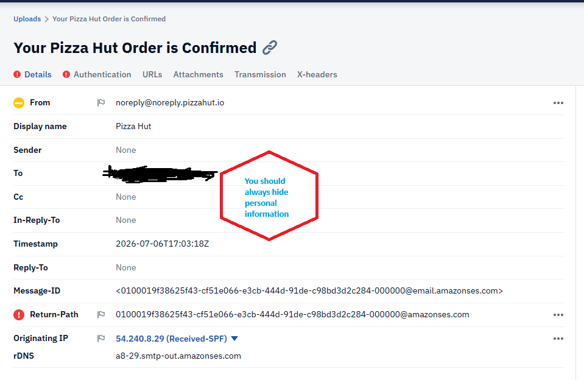
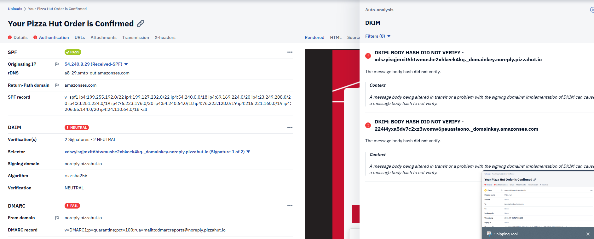
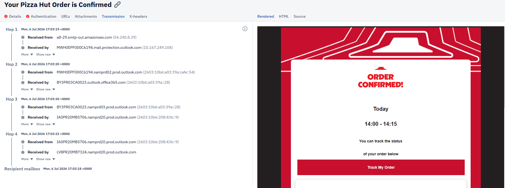
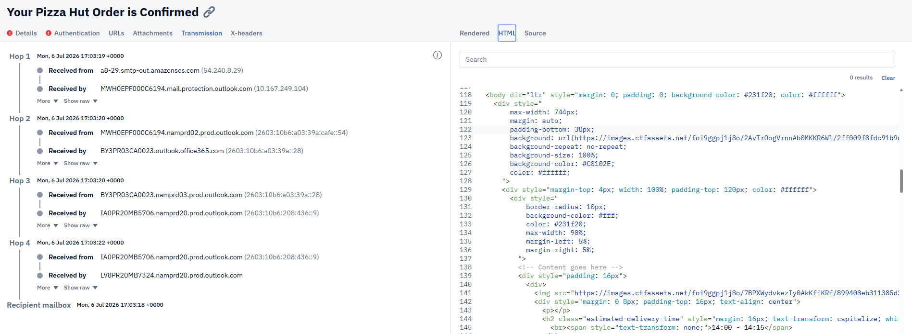
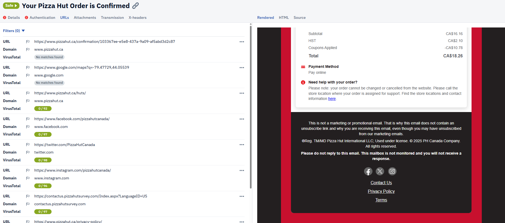
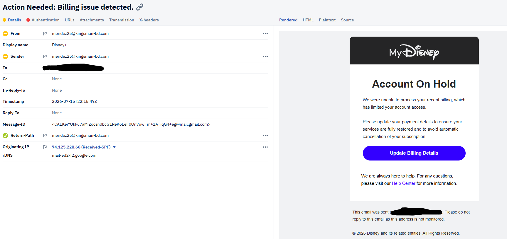
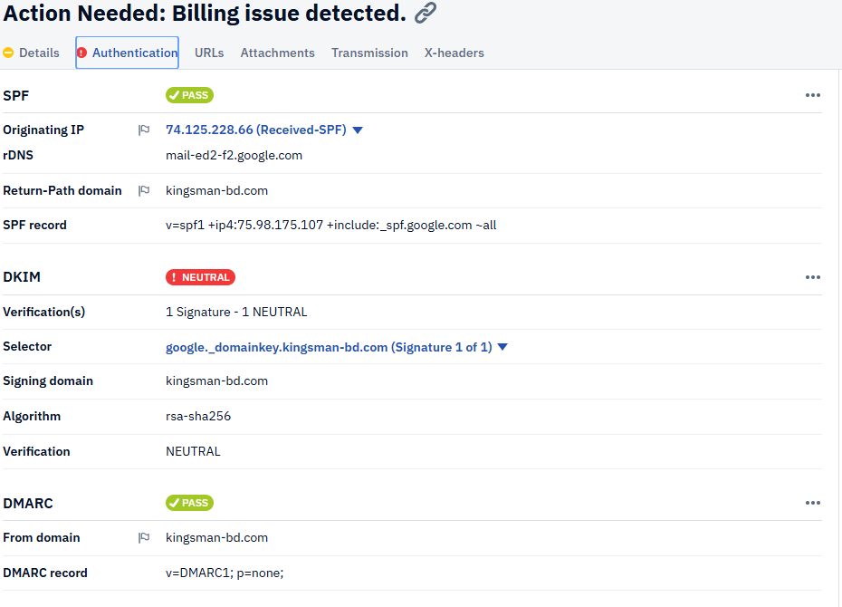
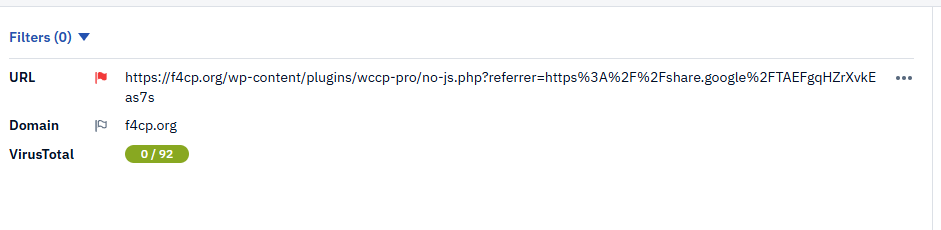
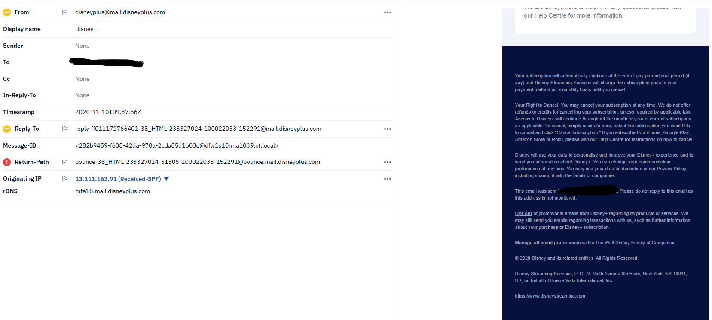

Introduction
I used Phishtool to analyze emails, both recieved from my own private email and known bad actor emails. Virustotal was also used to check URLs for malicious activity against records. Disclosure: email one and two come from a download from years prior, so the sites are unfortunately dead. they are for research purposes only.
Email one: sales@maxsgmail.top
There are a couple things that instantly flag this as suspcious. To begin with, the fromline uses a .top domain. .top is typically for top 10 sites, or marketing campagins.
However, due to their low costs it is quite often used for malicious phishing as well. Secondly, the display name is vastly different than the from line. Thirdly, the subject line implies urgency and asks us to click on a link given
When you dive into the URL and scan it using VirusTotal, it flags on seven different security vendors for phishing or malicious. For these four reasons we will flag this as malicious.
 [the URL fails virustotal checks]
[the URL fails virustotal checks] all checks come back malicious or phishing
all checks come back malicious or phishing  while many come back clean, too many come back flagged for us to trust this.
while many come back clean, too many come back flagged for us to trust this. 
email two: no_reply562@verify.com
Just like with the last email, this one has a from line and display name vastly different. this one uses a .com domain however. more trustworthy, but there are other things that discredit it. the DMARC test failed in Phishtool, which means the domain might not be trustworthy.
The email also implies urgency, and it even gives two options to click! confirm or deny: but both link to the same URL, and the URL is flagged by a security vendor for phishing. We will mark this as malicious as well.
 only a single security vendor flagged this. it being down for over a year is probably why its gone unnoticed by others
only a single security vendor flagged this. it being down for over a year is probably why its gone unnoticed by others there is two links, but only one url?
there is two links, but only one url?  yes, both urls lead to the same link. As the point is to give you options when stealing your information.
yes, both urls lead to the same link. As the point is to give you options when stealing your information. 
Email three: noreply@noreply.pizzahut.io
Just like the first two emails, this email also has a display name different than the from line. .io is more trusted however, as many use it for SaaS or tech domain alternatives to .com. The email also fails the DMARC test, which means we shouldn't trust it as authentic. From what i said previously it would sound like I should mark this as malicious. But when you go into the URLS you see something different than the previous bad actor emails. significantly more URLs. each URL leads to a different, trusted page. and the HTML is well designed. Now if I was unsure I would use the best form of MFA - asking in person if this was purchased. Yes! It was. I was hungry. I can verify seperately from this email that someone reached out and ordered a pizza, and this is a confirmation email. So this is marked as safe!
Always hide your personal information! you will notice the return path will not return to anything as well. they really don't want a response!
The DMARC failed, but the SPF passed. A very mixed bag email.
Lots of transmission on this email. But everything was sent in one day, and very quickly.
The HTML is also very clearn, using a style that looks very on brand for Pizza Hut. If I googled Pizza hut, I'm sure similar styling would show up.
Look at those clean virustotal checks! Plus they have seperate URLs for everything, most common scams do not bother adding details. But some will, always double check!
Email four: meridez25@kingsman-bd.com
This email is interesting as it passes many tests. The from line and display name are different. It also implies urgency and wants you to update your billing! The email also says do not reply, as the email is not monitored, but it does actually have a return path to act as recon, if you reply to this email but don't click I bet you will receive many more phishing emails since they know you are an active account. Now if we look at the DMARC and the SPF it actually passes both tests. The more interesting part is it passes the VirusTotal check (only on phishtool, if you click into virustotal it flags as suspicious under one security vendor). Now I could click into it, but VirusTotal notes that it has multiple redirects, and it is 503. thats strange as the email was only sent today, and if Disney was down I'm sure I could easily check through a site like downfor which checks if websites are up. But the easiest way to verify this is using MFA, like another email from when I signed up for Disney plus! a side by side of the from lines, return paths, and reply to lines are already different. but if you look at the header on the bottom you see Disney (and most emails, have a lot of techincal jargon on the bottom that most phishing emails don't bother adding. So why does it show clean on VirusTotal and Phishtool? I would assume the domain was taken down very quickly, as it is currently 503 status. But it shows you can not always trust tools
A very simple design for the header. It also says MyDisney as opposed to Disney+
Yes the SPF passes, but why do you need a return path if this email is supposed to be unmonitored?
The URL is the biggest giveaway here, Disney websites don't redirect, and use .com or the country you are watching from. Virustotal saying it is clean does not guarantee it is clean.
A previous email I received from Disney, you can see the detail they use on the headers. Also if you have to choose what email to trust, I would trust the one with the domain name registered to the service you are using, not a random name email.
* * * Key Takeaways:
If you aren't positive, don't click.
Verify in a way that does not use information from the email. Websites, phone numbers, offline.
It only takes being tricked one time to lose sensitive information. Constant vigilance is required.
``` ``` ```